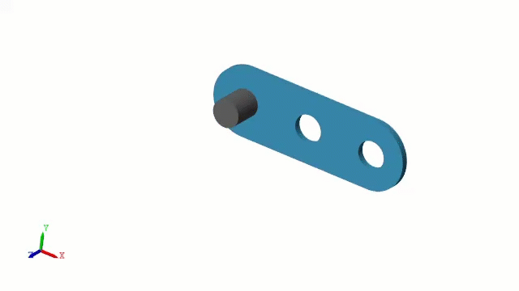
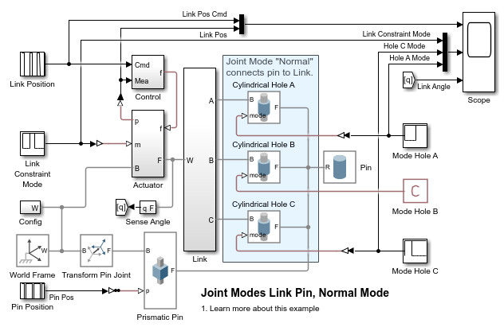
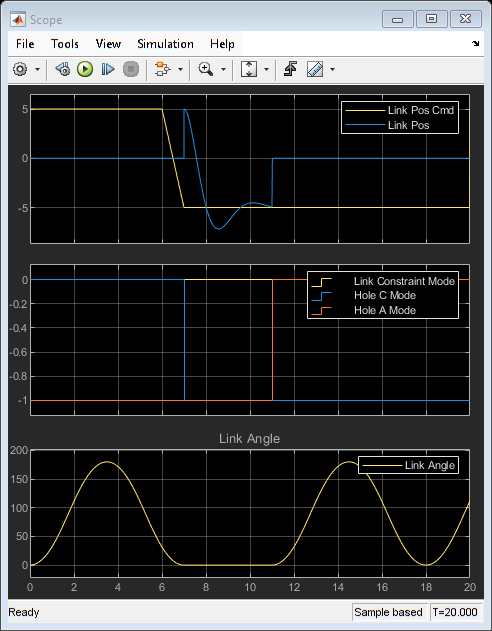

Pin Link Test, Joint Mode Normal

This example shows how to use joint modes to modify the kinematics of a mechanism. In this example, a link is connected to a pin using normal mode, and it is disconnected from the pin using disengaged mode. This permits the link to change its pivot point about the pin during simulation.
Using normal mode to engage the pin means that the frames must be closely aligned as the mode changes from disengaged to normal.
(return to Motor Grader Design with Simscape Overview)
Contents
Model
In this model, Cylindrical Joints connect the link to the pin. Only one cylindrical joint at a time will have mode "Normal", constraining the link to rotate about the pin in the hole where the pin is engaged.
Simulation Results from Simscape Logging, Grading Test
At the start of the simulation, the pin is engaged with hole C on the link. After the link pivots about hole C, the pin is disengaged from hole C by setting the mode of Cylindrical Hole C to -1 for disengaged. The Link is then constrained to World via a Prismatic Joint within the Actuator subsystem. The Prismatic Joint in Actuator was disengaged at the start of the simulation, and its mode is set to Normal so that the Link can be moved to engage the pin at hole A.
The actuator slides the link so that the pin is aligned with hole A. At that point, the actuator joint is disengaged and the mode of Cylindrical Hole A joint is set to 0 for normal mode. This engages the pin with hole A and the link then pivots about that hole.
